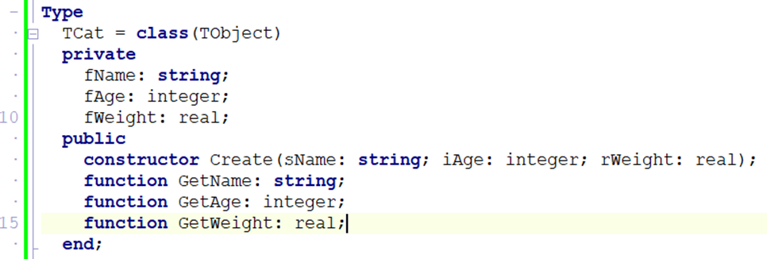
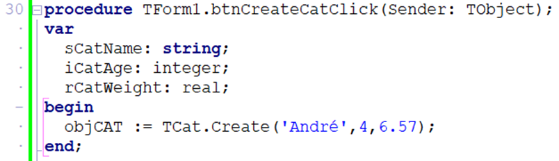

Object-Oriented Programming (OOP) Grade 12
OOP lets you model real-world things as objects in code. Think of a class as a blueprint (like architectural plans for a house) and an object as the actual building made from that plan. One blueprint, many buildings — one class, many objects.
Every part of OOP maps neatly onto a taxi:
- Class = the design of a taxi — the plans that say what every taxi has and can do. There is only one design.
- Object (instance) = one actual taxi on the road, e.g. the one with registration CA 123‑456. From the one design you can build many taxis.
- Attributes = what a taxi has: make, registration, colour, number of seats, fuel level, current speed.
- Methods = what a taxi does:
StartEngine,Drive,Stop,PickUp,DropOff,Hoot. - Constructor (Create) = building a brand-new taxi at the factory and giving it its starting details (make, registration).
- Encapsulation = you drive with the steering wheel and pedals (public methods); you never reach into the engine (private attributes). The engine is hidden under the bonnet — and that keeps it safe.
- Accessor (getter) = the fuel gauge lets you read the fuel level without touching the tank. Mutator (setter) = filling up at the petrol station changes the fuel level in a controlled way.
- Inheritance = a taxi is‑a vehicle: it inherits "drive" and "stop" from a general
TVehicle, then adds its own meter and passenger seats. - Polymorphism = tell any vehicle to
Hootand each does it its own way — a sedan taxi beeps, a minibus blares.

Core OOP Concepts
| Term | Definition |
|---|---|
| Class | A blueprint or template that describes what an object looks like and can do |
| Object | A specific instance of a class (like one particular cat — Whiskers) |
| Attribute | A variable that stores data about the object (e.g. fName, fAge) |
| Method | A procedure or function that belongs to the class (e.g. GetName, SetAge) |
| Constructor | Special method Create that creates an instance and sets initial values |
| Encapsulation | Hiding private data inside a class; only accessible through public methods |
| Inheritance | A new class inherits all attributes and methods of an existing (parent) class |
| Polymorphism | The same method name behaves differently in different classes |
In Delphi, every component is an object. TButton is a class; btnOK is an object. TForm is a class; Form1 is an object. OOP lets you create your own custom classes.
One Class, Many Objects
A class is defined once. You can create as many objects (instances) from it as you need — each with its own data.
UML Class Diagram
Before coding a class, design it using a UML (Unified Modeling Language) diagram — a rectangle divided into 3 sections.
Encapsulation
Keep attributes private — hidden from the outside world. Only expose them through controlled public methods (getters and setters). This protects data from accidental or invalid changes.
private
fName: string; // hidden from outside — direct access blocked
public
procedure SetName(s: string); // controlled write access (can include validation)
function GetName: string; // controlled read accessInheritance
A child class inherits all attributes and methods from a parent class, and can add or override its own. This avoids repeating code.
type
TAnimal = class
procedure Speak; virtual; // can be overridden in child classes
end;
TDog = class(TAnimal) // inherits everything from TAnimal
procedure Speak; override; // replaces TAnimal.Speak
end;
TCat = class(TAnimal)
procedure Speak; override;
end;Polymorphism
The same method name (Speak) behaves differently depending on the type of object. "Many forms" — poly = many, morph = form.
| Object | Method Called | Result |
|---|---|---|
objAnimal.Speak | TAnimal.Speak | 'Animal sound...' |
objDog.Speak | TDog.Speak (overridden) | 'Woof!' |
objCat.Speak | TCat.Speak (overridden) | 'Meow!' |
procedure TAnimal.Speak;
begin
ShowMessage('Animal sound...');
end;
procedure TDog.Speak;
begin
ShowMessage('Woof!');
end;
procedure TCat.Speak;
begin
ShowMessage('Meow!');
end;Types of Methods
| Method Type | Keyword | Description |
|---|---|---|
| Constructor | constructor | Creates the object and sets initial attribute values. Called on the class name: TCat.Create(...) |
| Accessor (getter) | function | Returns the value of a private attribute. Read-only access. |
| Mutator (setter) | procedure | Updates the value of a private attribute. Can include validation. |
| ToString | function | Returns a string representation of the object's state — used for display. |
| Auxiliary | private | Internal helper methods used by other methods, not accessible from outside. |
How to Create a Class in Delphi
- Go to File → New → Unit – Delphi to create a new blank unit.
- Save it in the same folder as your project (e.g.
UCar.pas). - Type the class structure in the
interfacesection (see template below). - Press Ctrl+Shift+C — Delphi auto-generates the method bodies in the
implementationsection. - Fill in the code inside each method body.
- In your main form unit, add the unit name to the
usesclause (e.g.uses ..., UCar;).
After writing the class declaration in the interface section, press Ctrl+Shift+C and Delphi automatically creates all the empty method implementations in the implementation section. You just fill in the code.
Complete Class Example — TCat
unit UCat;
interface
type
TCat = class
private
fName : string;
fAge : integer;
fWeight : real;
public
constructor Create(sName: string; iAge: integer; rWeight: real);
function GetName : string;
function GetAge : integer;
function GetWeight : real;
procedure SetName(sNew: string);
function ToString : string;
end;
implementation
constructor TCat.Create(sName: string; iAge: integer; rWeight: real);
begin
fName := sName;
fAge := iAge;
fWeight := rWeight;
end;
function TCat.GetName : string;
begin
Result := fName;
end;
function TCat.GetAge : integer;
begin
Result := fAge;
end;
function TCat.GetWeight : real;
begin
Result := fWeight;
end;
procedure TCat.SetName(sNew: string);
begin
fName := sNew;
end;
function TCat.ToString : string;
begin
Result := fName + ', Age: ' + IntToStr(fAge)
+ ', Weight: ' + FloatToStr(fWeight) + 'kg';
end;
end.Practice Example — TCar Class
This is the kind of class you will write in a Grade 12 exam. Study the pattern carefully — constructor, accessors, mutator, ToString.
unit UCar;
interface
type
TCar = class
private
fMake : string; // e.g. 'Toyota'
fYear : integer; // e.g. 2022
public
constructor Create(sMake: string; iYear: integer);
function GetMake : string;
function GetYear : integer;
procedure SetMake(sNewMake: string);
function ToString : string;
end;
implementation
constructor TCar.Create(sMake: string; iYear: integer);
begin
fMake := sMake;
fYear := iYear;
end;
function TCar.GetMake : string;
begin
Result := fMake;
end;
function TCar.GetYear : integer;
begin
Result := fYear;
end;
procedure TCar.SetMake(sNewMake: string);
begin
fMake := sNewMake; // could add validation here (e.g. check not empty)
end;
function TCar.ToString : string;
begin
Result := fMake + ' (' + IntToStr(fYear) + ')';
// Output example: 'Toyota (2022)'
end;
end.Using TCar in the Main Form
// 1. Add UCar to uses clause of the main form
uses
..., UCar;
// 2. Declare object variable (global or local)
var
objCar : TCar;
// 3. Create the object — in a button click or FormCreate
objCar := TCar.Create('Toyota', 2022);
// 4. Read values using accessors
lblMake.Caption := objCar.GetMake; // 'Toyota'
lblYear.Caption := IntToStr(objCar.GetYear); // '2022'
memOut.Lines.Add(objCar.ToString); // 'Toyota (2022)'
// 5. Update a value using mutator
objCar.SetMake('Honda');
lblMake.Caption := objCar.GetMake; // 'Honda'
Always call Create before using any other method. The object does not exist until it is created. Also make sure the class unit name is in the uses clause of your main form.
Using a Class in the Main Form
uses
..., UCat;
var
objCat : TCat;
// Create the object
objCat := TCat.Create('Whiskers', 3, 4.2);
// Use its accessors
lblName.Caption := objCat.GetName; // 'Whiskers'
lblAge.Caption := IntToStr(objCat.GetAge); // '3'
memOut.Lines.Add(objCat.ToString); // 'Whiskers, Age: 3, Weight: 4.2kg'
// Update via mutator
objCat.SetName('Felix');
lblName.Caption := objCat.GetName; // 'Felix'Dynamic Components — Creating Controls at Runtime
You already know that every Delphi control is an object of a class (a button is a TButton, a label is a TLabel). Because they are classes, you can create them in code while the program is running using the same Create constructor you use for your own classes — instead of dragging them onto the form at design time.
This is called creating a dynamic component. It is useful when you don't know in advance how many controls you need (e.g. one button per record loaded from a file).
The Four Steps
- Create the object from its class, passing the owner (usually the form).
- Set the Parent so Delphi knows where to draw it (which form/panel).
- Set properties like position, size and caption.
- Assign an event handler so it actually does something when clicked.
var
btnDynamic : TButton;
begin
// 1. Create the object (Form1 is the owner – frees it automatically)
btnDynamic := TButton.Create(Form1);
// 2. Set the Parent so it appears on the form
btnDynamic.Parent := Form1;
// 3. Set properties
btnDynamic.Left := 50;
btnDynamic.Top := 50;
btnDynamic.Width := 100;
btnDynamic.Height := 30;
btnDynamic.Caption := 'Click Me';
// 4. Assign an event handler (a procedure you wrote)
btnDynamic.OnClick := btnDynamicClick;
end;
// The handler the button will run when clicked
procedure TForm1.btnDynamicClick(Sender: TObject);
begin
ShowMessage('Dynamic button clicked!');
end;Owner (the argument to Create) is responsible for freeing the component from memory when the form closes. Parent decides where on screen the component is drawn. They are usually the same form, but not always (e.g. Owner = Form, Parent = a Panel on that form).
If you create a component with Create(nil) (no owner), you must free it yourself with btnDynamic.Free; when you are done, otherwise it stays in memory. Passing the form as the owner lets Delphi clean up for you automatically.